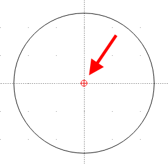

Using the Command Line
The Command Line offers users an alternative to using the mouse to select tools and draw. Using the keyboard to select tools and enter coordinates can provide greater speed and accuracy when creating drawings.
The command line provides other useful features not available using the mouse:
- Multi-command input
- A calculator
The command line is displayed in its own dock widget and consists of three components
- Command prompt.
- Command output window.
- A button (
 ) that displays a drop-down menu that includes:
) that displays a drop-down menu that includes:- Keycode Mode on/off.
- Load a Command file.
- Paste multiple commands.
See the appendix for a comprehensive list of Command Line commands.
Entering functions into the Command Line
The commands available to use are shown on the reference pages for each tool category. The command line is activated in a variety of ways:
- Start typing any command (for example, rect) and then select Enter.
- Select the Space bar, type any command and then select Enter.
- Select Ctrl+M, any command and then select Enter.
- Select Shift, any command and then select Enter.
- With the Keycode Mode on, type a two letter command (for example, ci). Selecting Enter is not required.
- Tab completion can be used in the command line when entering commands. Enter a partial command, such as cir, then select the Tab key. If only one command is possible from the partial command, the full command will display in the text entry field. If more than one command is possible, a list of possible commands will display in the command window.
Depending on the command you're using, additional input may be required in the Command Line or Toolbar.
- The Spacebar may be selected instead of the Enter key when Options > Application Preferences > Defaults > Evaluate commands when Spacebar is pressed is enabled (which is the default).
- The Keycode Mode permits the use of two letter commands and eliminates the need to select Enter after typing the command.
- Typing c or u followed by Enter can be used instead of typing close or undo.
Using relative coordinates
Instead of using absolute coordinates that always use 0,0 as the reference point, you can use relative coordinates. In LibreCAD, relative coordinates set the reference point to the last location you clicked when drawing an entity. Additionally, you can set or lock the relative zero to a given location.
The relative zero location is indicated by a small red crosshair ( ).
- Establish a relative zero location in the drawing, by drawing an entity or by manually setting the relative zero point (see Snapping).
- Enter a drawing mode, such as the draw rectangle mode, that you will use to reference the relative zero point.
- Follow prompts in the Command Line, but type an at-symbol (@) before coordinate values. For example, @1,1.
You can use two periods instead of the at-symbol when entering relative coordinates. For example, 1..1.

The relative zero point is at the center of the circle, after drawing a Circle by Diameter.
Using the Command Line Calculator
- Enter Cal in the Command Line to enable Calculator Mode.
- Enter equations as needed. Calculator Mode can also be used to retrieve values, such as pi. Results will display in the command window.
- Exit Calculator Mode by again entering Cal in the Command Line.
See the list of Calculator Operators and Functions.
- The constant pi is defined in LibreCAD as 3.14159265359.
- Trigonometric functions use radians (radians = degrees*pi/180).